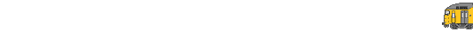

<script src="https://cdn.jsdelivr.net/gh/netizenorg/netnet-standard-library/build/nn.min.js"></script>
<script>
  /* global nn */
  
  // replace this with your own GIF
  const gifURL = 'AnimTrainDivider.gif'
  // replace this with a color that compliments your GIF
  const bgColor = '#e585ca'
  function createGif(x,y,w,h,url) {
    nn.create('img')
      .set({src:url}).css({}) // changes an objects attributes
    // could also be then gif.set instead
    // if line is a start of dot, will interpret as line before it
      .css({ position: 'absolute',
            left : x + `px`,
            top: `${y}px`,
            width: `${w}px`,
            height: `${h}`
      })
      .addTo('body')
    }
  function setup () {
  // css query selector 
    const b = nn.get('body')
    // can write backgroundColor in camelcase instead. 
    const style= {'background-color':bgColor, 
                'font-size': '24 px'}
    createGif(0,300,1000,100, gifURL)
  b.css(style)}
  
// setup goes on load
nn.on('load', setup)
</script>

<!--  -->